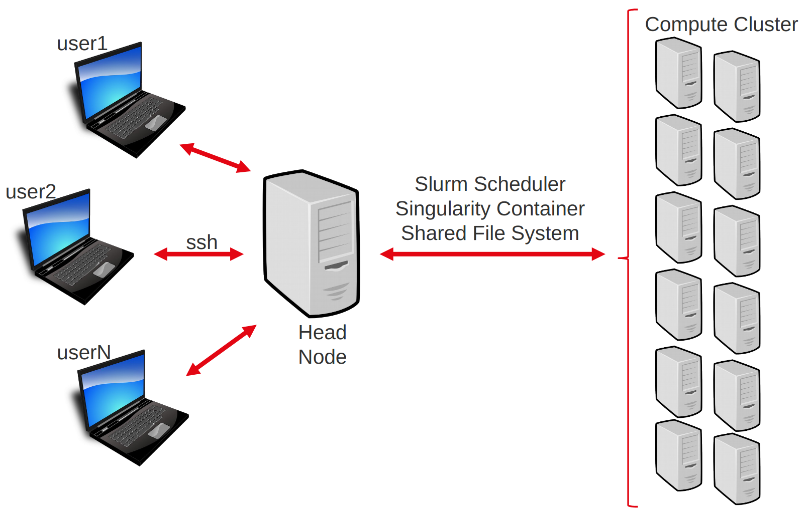

Server login + unix fresh up
To conduct the practicals of this course, we will be using a dedicated High Performance Computing cluster. This matches the reality of most NGS workflows, which cannot be completed in a reasonable time on a single machine.
To interact with this cluster, you will have to log in to a distant head node. From there you will be able to distribute your computational tasks to the cluster using a job scheduler called Slurm.
This page will cover our first contact with the distant cluster.
You will learn to :
- understand a typical computer cluster architecture.
- connect to the server.
- use the command line to perform basic operations on the head node.
- exchange files between the server and your own machine.
- submit a job to the cluster.
Note
If you are doing this course on your own, then the distant server provided within the course will not be available. Feel free to ignore or adapt any of the following steps to your own situation.
The computing cluster
The computing cluster follows an architecture that enables several users to distribute computational tasks among several machines which share a number of resources, such as a common file system.

Users do not access each machine individually, but rather connect to a head node. From there, they can interact with the cluster using the job scheduler (here slurm). The job scheduler’s role is to manage where and how to run the jobs of all users, such that waiting time is minimized and resource usage is optimized.
Warning
Everyone is connected to the same head node. Do not perform compute-intensive tasks on it or you will slow everyone down!
Connect to the server
Say you want to connect to cluster with address xx.xx.xx.xx and your login is login.
Warning
If you are doing this course with a teacher, use the link, login and password provided before or during the course.
The first step will be to open a terminal
Open a terminal, for instance with the application Xterm, or Xquartz.
Open a new terminal.
Open the application mobaXterm (or any ssh-enabling terminal aplpication you prefer).
On mobaXterm, click on “Start a local Terminal”.
In the terminal type the following command:
ssh login@xx.xx.xx.xx
When prompted for your password, type it and press Enter.
Note
There is no cursor or ‘●’ character appearing while you type your password. This is normal.
After a few seconds, you should be logged into the head node and ready to begin.
Using command line on the cluster
Now that you are in the head node, it is time to get acquainted with your environment and to prepare the upcoming practicals. We will also use this as a short reminder about the UNIX command line.
You can also refer to this nice Linux Command Line Cheat Sheet.
At any time, you can get the location (folder) your terminal is in at by typing the “print working directory” command:
pwd
When you start a session on a distant computer, you are placed in your home directory. So the cluster should return something like:
/shared/home/<login>
Creating a directory
Use the command line to create a repository called day1 where you will put all materials relating to this first day.
Answer
mkdir day1
Move to that directory.
Answer
cd day1
The directory /shared/data/ contains data and solutions for most practicals. Check the content of that directory.
Answer
ls /shared/data/
Note
You don’t need to move to that directory to list its contents!
Copy the script fastqc_Liu2015_SRR1272187_1.sh from /shared/data/Solutions/Liu2015 into your current directory.
Answer
cp /shared/data/Solutions/Liu2015/fastqc_Liu2015_SRR1272187_1.sh .
Print the content of this script to the screen.
Answer
more fastqc_Liu2015_SRR1272187_1.sh
#!/usr/bin/bash
#SBATCH --job-name=fastqc
#SBATCH --time=00:30:00
#SBATCH --cpus-per-task=1
#SBATCH --mem=1G
#SBATCH -o fastqc_Liu2015.o
#SBATCH -e fastqc_Liu2015.e
ml fastqc
dataDir=/shared/data/DATA/Liu2015
mkdir -p FASTQC_Liu2015/
fastqc -o FASTQC_Liu2015/ $dataDir/SRR1272187_1.fastq.gz
We’ll see what all this means soon.
Creating and editing a file
To edit files on the distant server, we will use the command line editor nano. It is far from the most complete or efficient one, but it can be found on most servers and is arguably among the easiest to start with.
Note
Alternatively, feel free to use any other CLI editor you prefer, such as vi.
To start editing a file named test.txt, type :
nano test.txt
You will be taken to the nano interface :

Type in your favorite movie quote, and then exit by pressing Ctrl+x (control+x on a Mac keyboard), and then y and Enter when prompted to save the modifications you just made.
You can check that your modifications were saved by typing
more test.txt
Exchanging files with the server
Whether you want to transfer some data to the cluster or retrieve the results of your latest computation, it is important to be able to exchange files with the distant server.
There exists several alternatives, depending on your platform and preferences.
We will use scp.
To copy a file from the server to your machine, use this syntax on a terminal in your local machine (open a new terminal if necessary).
scp <login>@<server-adress>:/path/to/file/on/server/file.txt /local/destination/
For example, to copy the file test.txt you just created in the folder day1/, to your current (local) working directory :
scp login@xx.xx.xx.xx:~/day1/file.txt .
To copy a file from your machine to the server (NB: here ~ will be interpreted as your home directory, this is a useful and time-saving shorthand):
scp /path/to/file/local/file.txt <login>@<server-adress>:/destination/on/server/
There are nice and free software with graphical user interfaces, such as filezilla, to help you manage exchanges with the distant server. Feel free to install and experiment with it during the break.

If you are using mobaXterm, the left panel should provide a graphical SFTP browser in the left sidebar which allows you to browse and drag and drop files directly from/to the remote server.

Submitting jobs
Jobs can be submitted to the compute cluster using sbatch scripts, which contain 2 parts :
-
information for the job scheduler:
- how much RAM / CPUs do I need ?
- where to write the logs of my job ?
-
bash commands corresponding to your task
But an example is worth a thousand words :
#!/usr/bin/bash
#SBATCH --job-name=test
#SBATCH --time=00:30:00
#SBATCH --cpus-per-task=1
#SBATCH --mem=1G
#SBATCH -o test_log.o
echo "looking at the size of the elements of /shared/data/"
sleep 10 # making the script wait for 10 seconds - this is just so we can see it later on.
# `du` is "disk usage", a command that returns the size of a folder structure.
du -h -d 2 /shared/data/
The lines beginning by #SBATCH specify options to the job scheduler:
- The first line indicates what shell should be used to interpret the commands.
#SBATCH --job-name=test: the job name#SBATCH --time=00:30:00: time reserved for the job : 30min.#SBATCH --cpus-per-task=1: CPUs for the job#SBATCH --mem=1G: memory for the job#SBATCH -o test_log.o: file to write output or error messages
Warning
Your job will fail as soon as it takes more time or RAM than requested. You might need to test it to find the appropriate values.
Copy this script inside a new file named mySbatchScript.sh, then submit it to the job scheduler using :
sbatch mySbatchScript.sh
Afterward, use the command squeue to monitor the jobs submitted to the cluster. Locate your job and wait for it to be accepted (RUNNING status), and then to complete (the job disappears from the output of squeue).
Check the output of your job in the output file.
Note
When there are a lot of jobs, squeue -u <username> will limit the list to those of the specified user.
Advanced cluster usage : loading modules
During our various analysis, we will call onto numerous software.
Fortunately, in most case we do not have to install each of these ourselves onto the cluster : they have already been packaged and prepared to be made available to you or your code.
However, by default these are not loaded and you have to explicitely load the module containing the software you want in your script (or in the interactive shell session).
Question: Why aren’t all the module already pre-loaded ?
Answer
Many toolsets have dependencies toward different, sometimes incompatible libraries. Packaging each tool independently and loading them separately circumvents this as you only load what you need, and you can always unload a toolset if you need to load another, incompatible, toolset.
Modules are managed with the module command.
Basic commands are :
module list: lists currently loaded modulesmodule load <modulename>aliasml <modulename>: loads module<modulename>module unload <modulename>: unloads module<modulename>module purge: unloads all loaded modulesmodule avail: lists all modules available for loadingmodule keyword <KW>: lists all modules available for loading which contains<KW>
Try it for yourself: soon, we will need the fastqc software. If we type in the terminal:
fastqc
Now, if we load it first
ml fastqc # shortcut for "module load fastqc"
fastqc
Note: our module provider is ComputeCanada, which has a lot of available software. To avoid storing all these on our cluster, each time a new module is loaded, it is fetched first on the compute canada servers, so sometimes it can take a bit of time to load a module for the first time.
Advanced cluster usage : job array
Often, we have to repeat a similar analysis on a number of files, or for a number of different parameters. Rather than writing each sbatch script individually, we can rely on job arrays to facilitate our task.
Say you want to execute a command, on 10 files (for example, map the reads of 10 samples).
You first create a file containing the name of your files (one per line); let’s call it readFiles.txt.
Then, you write an sbatch array job script:
#!/usr/bin/bash
#SBATCH --job-name=test_array
#SBATCH --time=00:30:00
#SBATCH --cpus-per-task=1
#SBATCH --mem=1G
#SBATCH -o test_array_log.%a.o
#SBATCH --array 1-10%5
echo "job array id" $SLURM_ARRAY_TASK_ID
# sed -n <X>p <file> : retrieve line <X> of file
# so the next line grabs the file name corresponding to our job array task id and stores it in the variable ReadFileName
ReadFileName=`sed -n ${SLURM_ARRAY_TASK_ID}p readFiles.txt`
# here we would put the mapping command or whatever
echo $ReadFileName
Some things have changed compared to the previous sbatch script :
#SBATCH --array 1-10%5: will spawn independent tasks with ids from 1 to 10, and will manage them so that at most 5 run at the same time.#SBATCH -o test_array_log.%a.o: the%awill take the value of the array task id. So we will have 1 log file per task (so 10 files).$SLURM_ARRAY_TASK_ID: changes value between the different tasks. This is what we use to execute the same script on different files (usingsed -n ${SLURM_ARRAY_TASK_ID}p)